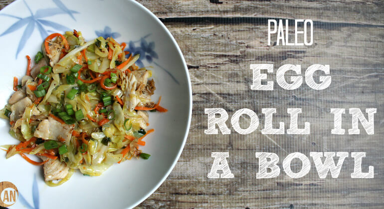

Paleo Egg In a Bowl

INGREDIENTS
- 1 small head of cabbage chopped into slices
- 2 large carrots cut into long strips (using THIS)
- 1 tbsp unflavored coconut oil
- 1/3 cup coconut aminos
- 1 tbsp sesame oil
- 2 garlic cloves minced
- 4 green onions diced for garnish
- Optional: protein of choice - chicken and shrimp are best. I used chicken. see notes
DIRECTIONS
- Melt the coconut oil over medium-high heat. Add the cabbage.
- Add the carrot.
- Sautee until soft. If it gets too dry, add a little water and let it evaporate and help soften the veggies.
- Add the coconut aminos and sesame oil.
- Sautee some more until softer and the sauce is absorbed.
- Add the garlic and cook until fragrant.
- Add the green onions on top.